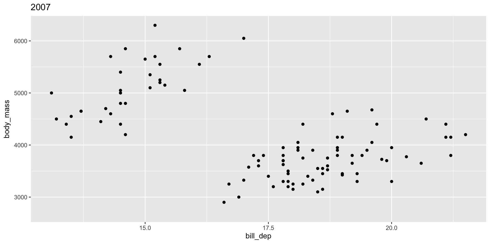
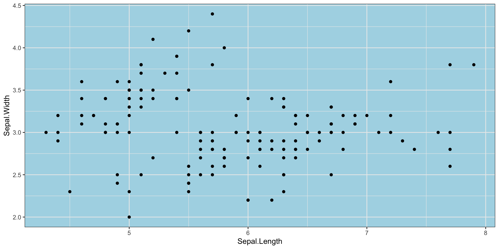

| Date | Time | Details |
|---|---|---|
| 2026-04-23 | 6:00pm ET | Pre-Assignment #11 Due |
| 2026-04-24 | 11:59pm ET | Mini-Project #03 Due |
| 2026-04-30 | 6:00pm ET | Pre-Assignment #12 Due |
| 2026-05-03 | 11:59pm ET | Mini-Project Peer Feedback #03 Due |
| 2026-05-07 | 6:00pm ET | Final Project Presentation Slides Due |
| 2026-05-14 | 6:00pm ET | Pre-Assignment #14 Due |
| 2026-05-15 | 11:59pm ET | Mini-Project #04 Due |
Software Tools for Data Analysis
STA 9750
Michael Weylandt
Week 10 – Tuesday 2026-04-21
Last Updated: 2026-04-21
STA 9750 Week 10
Today: Lecture #08: Advanced ggplot2 – maps, interactivity, animation
These slides can be found online at:
In-class activities can be found at:
Upcoming TODO
Upcoming student responsibilities:
STA 9750 Week 10
Today: Lecture #08: Advanced ggplot2 – maps, interactivity, animation
- Communicating Results (
quarto) ✅ RBasics ✅- Data Manipulation in
R✅ - Data Visualization in
R⬅️- Static Plots ✅
- Interactivity, Maps, Animated Plots ⬅️
- Getting Data into
R - Statistical Modeling in
R
Today
Today
- Course Administration
- Review Exercise
- Advanced
ggplot2- Spatial Data (Maps)
- Animation
- Interactivity
- Wrap-Up
- Life Tip of the Day
Administrative Business
STA 9750 Mini-Projects
- Mini-Project #01 ✅ (2026-03-13 at 11:59pm ET)
- Mini-Project #02 ✅ (2026-04-03 at 11:59pm ET)
- Mini-Project #03 (2026-04-24 at 11:59pm ET)
- Submission ⬅️
- Peer Feedback
- Mini-Project #04 (2026-05-15 at 11:59pm ET)
Mini-Project #03
MP#03 - Who Goes There? US Internal Migration and Implications for Congressional Reapportionment
Due 2026-04-24 at 11:59pm ET
Topics covered:
- Data Import
- Package Usage
- Static Files
- API Calls
- Advanced Data Manipulation
- Spatial Data Visualization (Optional)
Future Mini-Projects
MP#04 - Going for the Gold
Due 2026-05-15 at 11:59pm ET
Topics covered:
- Data Import
- HTTP Requests
- HTML Scraping (Tabular)
- Text Processing
- \(t\)-tests
- Putting Everything Together
Course Support
- Synchronous: MW Office Hours 2x / week:
- Wednesdays 5pm in-person
- Thursdays 5pm on Zoom
- Asynchronous: Piazza
Course Project
Course Project should be your main focus for rest of course
- But you still need to do mini-projects and pre-assignments(!)
Course Project
Final submissions:
- Detailed rubrics for group report + individual report
Notes added on integration of SQs and strategies for estimating causal effects. Ask questions! I’m happy to fill these out further.
Review Exercise
SSA Registered Births
Time series data of babies born and registered with the Social Security Administration (previously in Lab #05)
Rows: 7,305
Columns: 7
$ year <dbl> 1969, 1969, 1969, 1969, 1969, 1969, 1969, 1969, 1969, 1969…
$ month <dbl> 1, 1, 1, 1, 1, 1, 1, 1, 1, 1, 1, 1, 1, 1, 1, 1, 1, 1, 1, 1…
$ day <dbl> 1, 2, 3, 4, 5, 6, 7, 8, 9, 10, 11, 12, 13, 14, 15, 16, 17,…
$ births <dbl> 8486, 9002, 9542, 8960, 8390, 9560, 9738, 9734, 9434, 1004…
$ day_of_year <dbl> 1, 2, 3, 4, 5, 6, 7, 8, 9, 10, 11, 12, 13, 14, 15, 16, 17,…
$ day_of_week <dbl> 3, 4, 5, 6, 7, 1, 2, 3, 4, 5, 6, 7, 1, 2, 3, 4, 5, 6, 7, 1…
$ id <dbl> 1, 2, 3, 4, 5, 6, 7, 8, 9, 10, 11, 12, 13, 14, 15, 16, 17,…SSA Registered Births
Practice visualization:
- Are there months with more births?
- Are there days of the week with more births?
- Is there a long-term trend in births?
See Lab #08 for details.
Breakout Rooms
| Breakout Room | Team |
|---|---|
| 1 | Maniac Braniacs (HHS+KK+FC+DN) |
| 2 | Water Benders (JE+JABB+MTP+JA+AS) |
| 3 | 3-1-Fun! (XC+ML+ER+RJSN) |
| 4 | Emissions Impossible (LR+MOG+APTL) |
| 5 | Inspector Gadget (MUO+KN+CM+ID+KM) |
Review activities from today’s lab
Advanced ggplot2
Spatial Data
Maps are more interesting than you think!
- The world isn’t flat!
This can get intense, but we will get by with simple features (sf)
Map Projections
WGS 84
WGS 84 is a robust and widely-used way of creating maps from 3D coordinates.
- Good default
- Convert existing
sfusingsf::st_transform(4326)
Not universal!
sf Package
The sf package provides tools for dealing with spatial data:
st_readfor readinggeojsonorshpfilesst_joinfor combining spatial data- Integrates with
ggplot2::geom_sf()for plotting
sf Objects
sf object - data.frame with additional geometry information
Reading layer `nc' from data source
`/Library/Frameworks/R.framework/Versions/4.5-arm64/Resources/library/sf/shape/nc.shp'
using driver `ESRI Shapefile'
Simple feature collection with 100 features and 14 fields
Geometry type: MULTIPOLYGON
Dimension: XY
Bounding box: xmin: -84.32385 ymin: 33.88199 xmax: -75.45698 ymax: 36.58965
Geodetic CRS: NAD27Rows: 100
Columns: 15
$ AREA <dbl> 0.114, 0.061, 0.143, 0.070, 0.153, 0.097, 0.062, 0.091, 0.11…
$ PERIMETER <dbl> 1.442, 1.231, 1.630, 2.968, 2.206, 1.670, 1.547, 1.284, 1.42…
$ CNTY_ <dbl> 1825, 1827, 1828, 1831, 1832, 1833, 1834, 1835, 1836, 1837, …
$ CNTY_ID <dbl> 1825, 1827, 1828, 1831, 1832, 1833, 1834, 1835, 1836, 1837, …
$ NAME <chr> "Ashe", "Alleghany", "Surry", "Currituck", "Northampton", "H…
$ FIPS <chr> "37009", "37005", "37171", "37053", "37131", "37091", "37029…
$ FIPSNO <dbl> 37009, 37005, 37171, 37053, 37131, 37091, 37029, 37073, 3718…
$ CRESS_ID <int> 5, 3, 86, 27, 66, 46, 15, 37, 93, 85, 17, 79, 39, 73, 91, 42…
$ BIR74 <dbl> 1091, 487, 3188, 508, 1421, 1452, 286, 420, 968, 1612, 1035,…
$ SID74 <dbl> 1, 0, 5, 1, 9, 7, 0, 0, 4, 1, 2, 16, 4, 4, 4, 18, 3, 4, 1, 1…
$ NWBIR74 <dbl> 10, 10, 208, 123, 1066, 954, 115, 254, 748, 160, 550, 1243, …
$ BIR79 <dbl> 1364, 542, 3616, 830, 1606, 1838, 350, 594, 1190, 2038, 1253…
$ SID79 <dbl> 0, 3, 6, 2, 3, 5, 2, 2, 2, 5, 2, 5, 4, 4, 6, 17, 4, 7, 1, 0,…
$ NWBIR79 <dbl> 19, 12, 260, 145, 1197, 1237, 139, 371, 844, 176, 597, 1369,…
$ geometry <MULTIPOLYGON [°]> MULTIPOLYGON (((-81.47276 3..., MULTIPOLYGON ((…Chloropleths
A map whose fill depends on the value of interest is called a chloropleth:
Integrates well with ggplot2:
geom_sfknows how to handle geometries- other features all work as expected (fill, animation, legends, etc.)
Breakout Exercises
Two sets of spatial exercises:
- Chloropleths
- Cartograms
Animation
Animated Graphics
gganimate is the de facto standard for animated ggplot2:
- Make a bunch of
pngfiles - Combine into a
gif
Most commonly: +transition_time(VARIABLE)
NB: Unlike facet_wrap, no ~ before VARIABLE
transition_*() functions
Animation is implemented via a new plot element: transition_*():

transition_*() functions
Add a title to indicate time being shown:

transition_*() functions
gganimate “tweens” (interpolates) between frames for smoothness - works best for continuous time data.
It’s a bit weird here and we might prefer a more discrete interpolation:

Easing
Use the ease_ functions (or enter_()/exit_*() separately) for finer control:

Grouping
The group variable is used to determine whether something is permanent over time.
Bad! Doesn’t make sense to interpolate penguins
Grouping

See gganimate Getting Started Documentation for more
Breakout Exercises
Animation exercises:
gapminderdata- How has the world gotten healthier and richer over the past century?
Animated Graphics
When it works, gganimate is great
- PITA when external software is busted
Alternatives:
- Facet plots
- Split facets over pages and scroll quickly:
ggforce::facet_wrap_paginate() - Interactivity with autoplay
Caution: think about how transitions should be structured
Interactivity
Interactivity
The ggiraph package provides for interactive ggplot2
Alternatives
The plotly package provides a ggplotly() function which works similarly.
Advantages:
- Has a more sophisticated “time change” interactivity
Disadvantages
- Doesn’t support all of
ggplot2
Alternatives
Example of ggplotly - frame gives rise to a time slider:
Shiny
Plotting FAQs
ggplot2 & Pie Charts
Why do Pie Charts have a bad reputation?
- Use of area and angle over length: less accurate perception
- Depends on
fillto convey category - limited categories
But primarily - “insider smugness” and hate of Excel
ggplot2 Plot Type Choice
For me:
- Exploratory mode:
- Simple: line, scatter, bar, frequency
- Publication mode:
- Very context specific
- “Simplicity” / “Elegance” depend on audience expectations
ggplot2 Font Sizing
Theme machinery!
Overplotting / ScatterBlobs
Student asked about “scatterblobs” - typo(?) but I love it!
- Density based plotting: hexbins, histograms, rugplots
- Data reduction: summarization or sub-sampling
Optimizing ggplot2 Performance
Active project of ggplot2 team - not much you can do
Practical advice:
- Plot less (see previous slide)
- Take advantage of
quartoCaching
ggplot2 Beyond Scatter and Line
Some favorite semi-advanced plot types:
- Violin plots: combination of boxplot and histogram
- Ridgelines
- Beeswarms
Deep rabbit hole
ggplot2 + High-Dimensional Data
High-dimensional data: measure many variables per observation (“wide”)
High-dimensional data is hard to visualize
Approaches:
- Pair plots for “moderate” HDD
- PCA (or similar dimension reduction. Take 9890!)
Custom ggplot2 Theme

Advanced:
theme_set()- changeggplot2defaults.Rprofile- set code to run every time you startR
ggplot2 - When Not to Use
ggplot2 is designed to make good statistical graphics. Sub-par for:
- Very advanced interactivity (unless combined with
shinyor custom JS) - Really big data
- Hardcore customization / “infographics”
git WTF
Reference: Happy Git with R
Wrap-Up
Review
Advanced ggplot2:
ggplot2as a platform for powerful extensions- Spatial data:
sf - Animation:
gganimate - Interactivity:
ggiraph,shiny
Wrap-Up
Orientation
- Communicating Results (
quarto) ✅ RBasics ✅- Data Manipulation in
R✅ - Data Visualization in
R✅ - Getting Data into
R⬅️- Files and APIs ✅
- Web Scraping [Thursday]
- Cleaning and Processing Text
- Statistical Modeling in
R